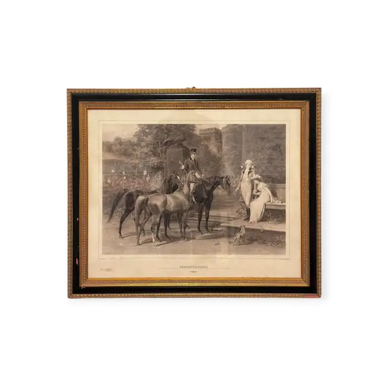
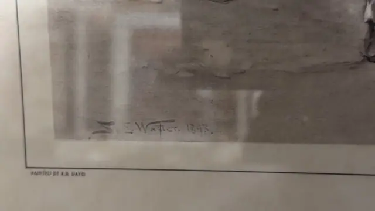
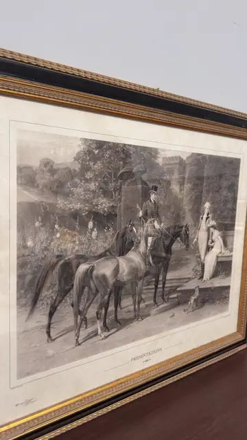
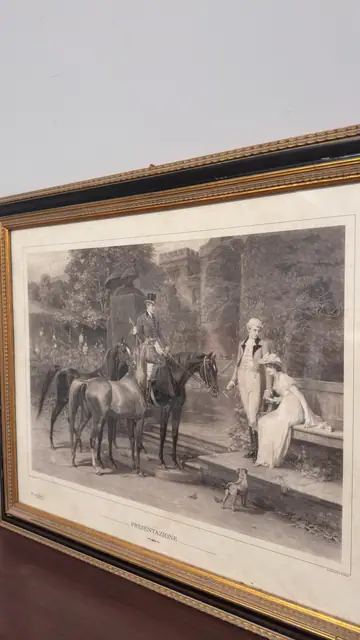

Paintings & Prints
Presentazione, Antique Equestrian Engraving, Signed, Framed, 1893
· late 19th century; the plate is dated 1893
Price Upon Request




About the Item
A large monochrome plate in the Victorian sporting-genre manner. At the left a mounted rider in top hat and dark coat holds three horses on a gravel walk before a castellated house half-hidden in trees; at the right a young man in pale breeches gestures towards a lady in a long white dress and wide hat, seated on a stone bench beside a low wall. A whippet stands on the steps between the two groups. The tone runs from deep velvety blacks in the horses and foliage to soft open greys in the sky and the lady's dress, and the paper has warmed to a uniform ivory-tan. Lettered beneath the plate in small letterpress, mounted without a mat in a black-and-gilt frame under glass. Medium: photogravure or steel engraving on paper. Signed in the plate, lower left inside the image, reading "S. E. Waller. 1893.". Inscribed on the reverse or mount: PAINTED BY E.B. DAVIS; PRESENTAZIONE. Condition: The sheet is age-toned overall with light scattered foxing in the margins and a darker tide-line along the upper edge. Frame corners show rubbing and small losses to the gilt. Strong glass glare in every shot.
Details
- Creation Year:
- late 19th century; the plate is dated 1893
- Dimensions:
- Height: 24.0 in (60.96 cm)
Width: 28.7 in (72.9 cm)
outside of frame - Medium:
- photogravure or steel engraving on paper
- Period:
- 19Th
- Condition:
- Offered in the condition shown in the photographs.
- Reference Number:
- VO-175
- Documentation:
- no certificate photographed
- Gallery Location:
- PAINTED BY E.B. DAVIS; PRESENTAZIONE